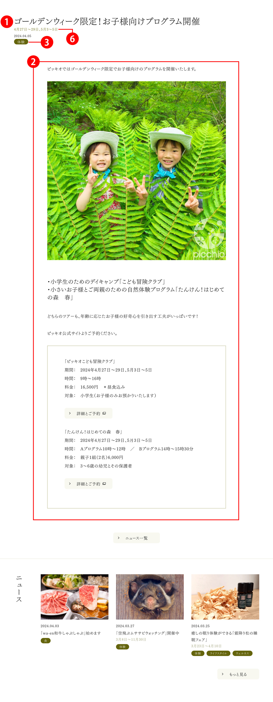
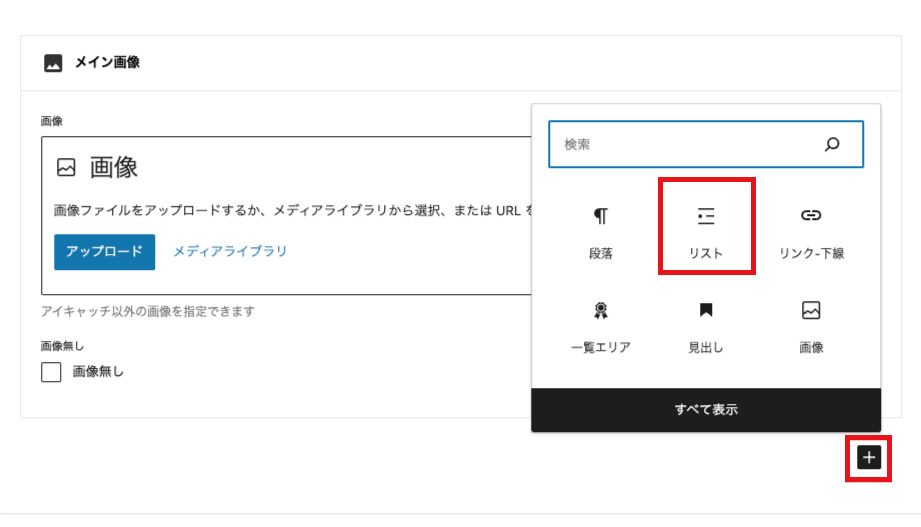
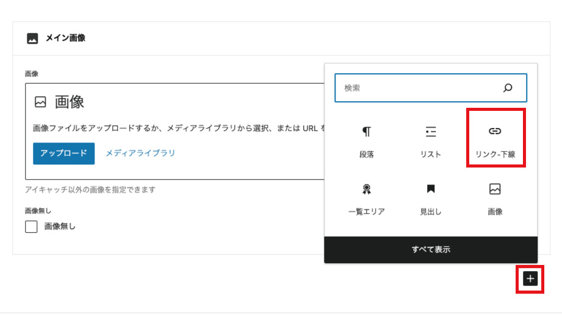
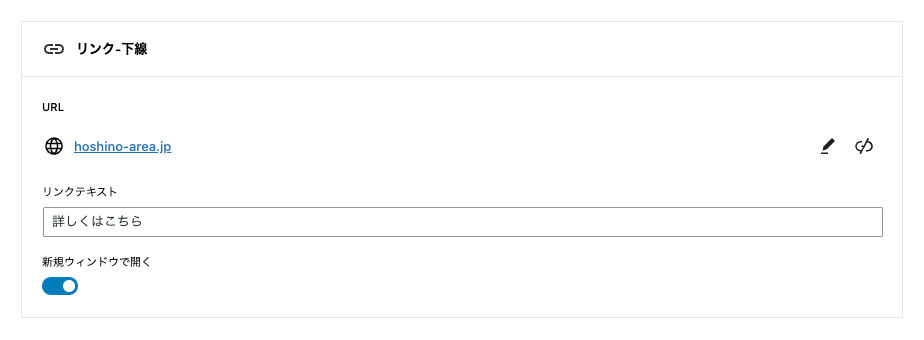
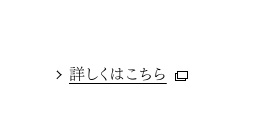

星野エリア
【ニュース】WordPress更新マニュアル
2024.4.4 更新
メニュー
ニュースを追加する
- 画面上部の「新規投稿を追加」をクリックします。
- ▼「ニュース」新規登録画面


- タイトル*（必須）
記事のタイトルを入力します。 - 本文を入力*（必須）
記事の本文になります。
見出しを挿入する際は、見出しを挿入したいところで、「/」（半角スラッシュ）を入力してください。
「メインイメージ」の設定方法
詳細ページトップに表示される画像を設定することができます。
一覧ページ用およびOGP用に「アイキャッチ画像」が必要になるため、必ず設定いただけますようお願いいたします。
「メイン画像」が未設定の場合、「アイキャッチ画像」が代用されます。
「アイキャッチ画像」とは別の画像をメイン画像にしたい場合、画像をアップまたはライプラリから設定してください。
「画像無し」にチェックを入れると、メイン画像無しにできます。

「見出し」の追加方法

「/」（半角スラッシュ）を入力して表示されたリストの中から、「見出し」を選択します。

上記画像のように「H2」と表示され、入力した文字が大きく表示されます。
「H2」「H3」「H4」のサイズ比較


すでに入力している文字を見出しに変更する場合は、文字に文字にカーソルを合わせます。表示された一番左のアイコンを選択し、さらにリストから「見出し」を選択します。
文章を挿入する際は、文章を挿入したいところで、「段落ブロック」を追加してください。
「段落ブロック」の追加方法

画像を挿入する際は、画像を挿入したいところで、「画像ブロック」を追加してください。
「画像ブロック」の追加方法

「＋」ボタンを押して「画像」をクリックします。

画像入力用のブロックが作成されるので、任意の画像を選択してください。
※画像の詳しいアップロード方法はこちら
※画像のリサイズ方法はこちら
リストを挿入する際は、リストを挿入したいところで、「リストブロック」を追加してください。
「リストブロック」の追加方法

入力例

入力例→出力結果

リストを挿入する際は、リストを挿入したいところで、「リストブロック」を追加してください。
「リストブロック」の追加方法

入力例
・URL：リンク先URLを入力してください
・リンクテキスト：任意のテキストを入力してください
・新規ウィンドウで開く：リンク先を新規ウィンドウで開く場合は有効にしてください。

入力例→出力結果
 - お知らせのカテゴリ
ニュースの分類（カテゴリ）を選択してください。
複数選択することができます。 - 関連ショップ
選択された各ショップ等のページに、該当ニュースを各ショップ等のページに表示させることができます。
複数選択することができます。 - アイキャッチ画像*（必須）
「アイキャッチ画像を設定」を選択し、画像を設定します。
一覧画面で表示されるサムネイル画像になります。
OGP画像としても流用されます。
初期状態では、詳細ページのメイン画像として使用されます。 - 子イベント機間
「イベント期間」を記入してください。
例）4月27日～29日、5月3～5日
- 公開*（必須）
青い「公開」ボタンを押してください。記事が公開されます。
公開日時が新しいものから順番にHP上に並びます。
- タイトル*（必須）
- 公開した「ニュース」を編集・削除する
※編集方法はこちら